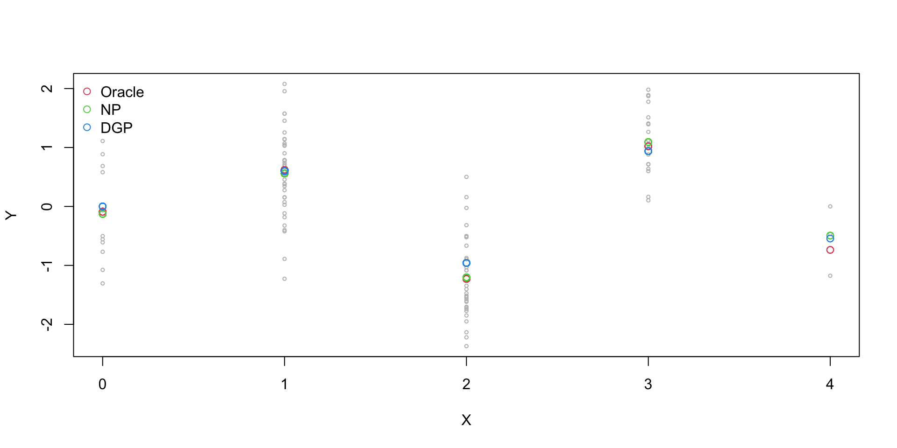
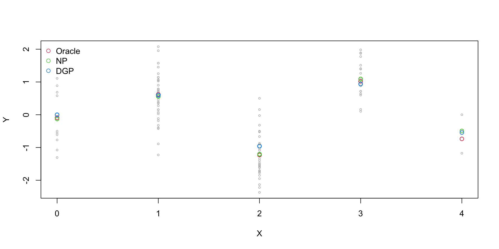
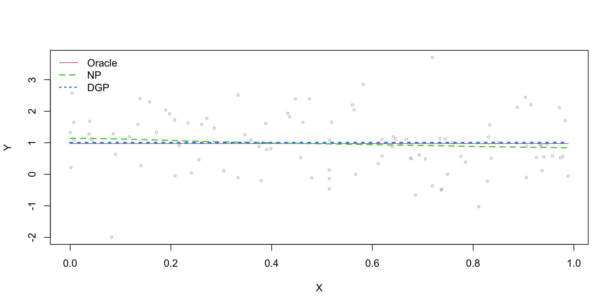
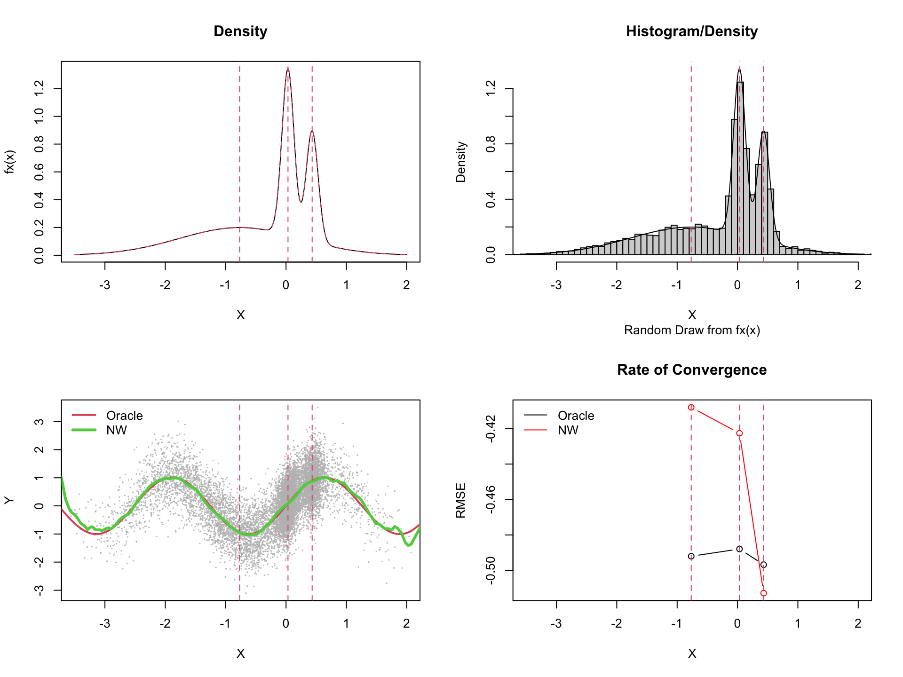

Sid Kankanala, Marcia Schafgans, and Victoria Zinde-Walsh
2023-10-23
The authors consider kernel-weighted nonparametric regression when the distribution of the regressors may not possess absolute continuity with respect to the Lebesgue measure
They demonstrate that convergence rates are influenced non-trivially by the underlying distribution
In the case of absolutely continuous measures, their approach weakens the usual regularity conditions
They extend their analysis to encompass kernel regression with multiple functional regressors
The authors consider a smooth nonparametric model with additive errors \[Y=m(X)+u,\qquad E(u|X)=0\]
\(X\) may belong to a function space, e.g., continuous functions on a compact set, or a more general metric space
\(X\) does not necessarily have to be a vector or a function
\(X\) is supported on some domain in a vector or metric, semi-metric space denoted as \(\Xi\)
The authors focus is on the generality of assumptions on the underlying distribution of \(X\), i.e., on \(F_X(x)\)
The authors consider three cases:
\(\Xi=\mathbb{R}^q\) (standard kernel regression)
\(\Xi=\Xi^1\) (univariate metric space, i.e., functional regression)
\(\Xi=\Xi^q=\Xi^1\times\cdots\times\Xi^1\) (product metric space)
The authors contribute to the literature by:
Establishing a novel CLT
Demonstrating that convergence rates are affected by the underlying distribution
Demonstrating that they can weaken usual regularity conditions assumed for such analysis
When \(X\) has discrete support, kernel smoothing can attain a \(\sqrt{n}\) rate for \(E(Y|X=x)\)
This is achieved by using, e.g., cross-validation to select smoothing parameters when using categorical kernel functions (Li and Racine 2007) or continuous kernel functions (Bierens 1983)

When \(X\) has continuous support by is unrelated to \(Y\), kernel smoothing can attain a \(\sqrt{n}\) rate for \(E(Y|X=x)=E(Y)\)
This can be attained when using, e.g., cross-validation to select bandwidths that select \(h\to\infty\) with high probability when using continuous kernel functions (Hall, Li, and Racine 2007)

Otherwise, when kernel smoothing under common regularity conditions, we attain a \(\sqrt{nh}\) rate of convergence
Using an appropriate bandwidth, for \(X\in\mathbb{R}^1\) \({\text RMSE}\propto n^{-2/5}\)
The authors consider, instead, cases where the convergence rate, when using continuous kernel functions can be faster than the usual rate, for instance when there exist mass points in the support of \(X\)
The simulations are extensive but might be improved
Bandwidth choice (“fixed”) is ISE/IMSE optimal (i.e., “global” rather than “pointwise” - is this wise? time for a rethink?)
Is a fixed bandwidth the best in this setting? What about “locally adaptive” bandwidths?
Perhaps the following might be an alternative to the exisitng simulations
run Monte Carlo simulations comparing various methods on predictions at a set of support points (as is currently done by the authors)
consider a range of sample sizes
for each replication record the pointwise RMSE
regress log(RMSE) on log(n) (the coefficient on log(n) will be the empirical rate of convergence, i.e., if \({\text RMSE} =\delta n^{-1/2}\) then \(\log({\text RMSE}) =\alpha+\beta\log(n)\) and \(\beta\) can be estimated)
We consider \(Y=\sin(2X)+\epsilon\), where \(X\{0,1,2\}\)
We implement the “Oracle” esitmator and the kernel estimator (for both we expect \(\beta=-1/2\), i.e., \({\text RMSE}\propto n^{-1/2}\))
The following table shows the “empirical” rate of convergence ($\hat\beta$) in this case
| X | Oracle | NW | ratio |
|---|---|---|---|
| 0 | -0.52 | -0.51 | 0.98 |
| 1 | -0.50 | -0.52 | 1.03 |
| 2 | -0.50 | -0.51 | 1.02 |
It appears that the kernel estimator attains the Oracle rate with discrete regressors and data-driven smoothing parameter choice with a discrete support kernel function
We consider \(Y=\sin(2X)+\epsilon\), where \(X\{0,1,2\}\)
We implement the “Oracle” esitmator and the kernel estimator (for both we expect \(\beta=-1/2\), i.e., \({\text RMSE}\propto n^{-1/2}\))
The following table shows the “empirical” rate of convergence ($\hat\beta$) in this case
| X | Oracle | NW | ratio |
|---|---|---|---|
| 0 | -0.52 | -0.51 | 0.99 |
| 1 | -0.50 | -0.51 | 1.02 |
| 2 | -0.50 | -0.51 | 1.01 |
It appears that the kernel estimator attains the Oracle rate with discrete regressors and data-driven bandwidth choice with a continuous support kernel function
We consider \(Y=\sin(2X)+\epsilon\), where \(X\sim U[-3,3]\)
We implement the “Oracle” esitmator and the kernel estimator (for the Oracle we expect \(\beta=-1/2\), i.e., \({\text RMSE}\propto n^{-1/2}\), for the kernel we still expect \(\beta=-1/2\), i.e., \({\text RMSE}\propto n^{-1/2}\))
| X | Oracle | NW | ratio |
|---|---|---|---|
| -2 | -0.52 | -0.49 | 0.96 |
| 0 | -0.52 | -0.50 | 0.96 |
| 2 | -0.52 | -0.49 | 0.95 |
It appears that the kernel estimator attains the Oracle rate with irrelevant continuous regressors and data-driven bandwidth choice with a continuous support kernel function
We consider \(Y=\sin(2X)+\epsilon\), where \(X\sim U[-3,3]\)
We implement the “Oracle” esitmator and the kernel estimator (for the Oracle we expect \(\beta=-1/2\), i.e., \({\text RMSE}\propto n^{-1/2}\), for the kernel we expect \(\beta=-2/5\), i.e., \({\text RMSE}\propto n^{-2/5}\))
| X | Oracle | NW | ratio |
|---|---|---|---|
| -2 | -0.51 | -0.42 | 0.84 |
| 0 | -0.50 | -0.44 | 0.86 |
| 2 | -0.50 | -0.41 | 0.83 |
It appears that the kernel rate of convergence is slower than the Oracle with relevant continuous regressors and data-driven bandwidth choice with a continuous support kernel function
| X | Oracle | NW | ratio |
|---|---|---|---|
| -0.77 | -0.49 | -0.41 | 0.83 |
| 0.03 | -0.49 | -0.42 | 0.87 |
| 0.43 | -0.50 | -0.51 | 1.03 |
Comments (“trinormal” case)
The authors state “The simulations demonstrate the effect of singularity on point-wise convergence rates for the kernel estimators.” and that “This a.c. distribution represents features (high derivatives) that are more reflective of unsmooth densities we want to emphasize here.”
